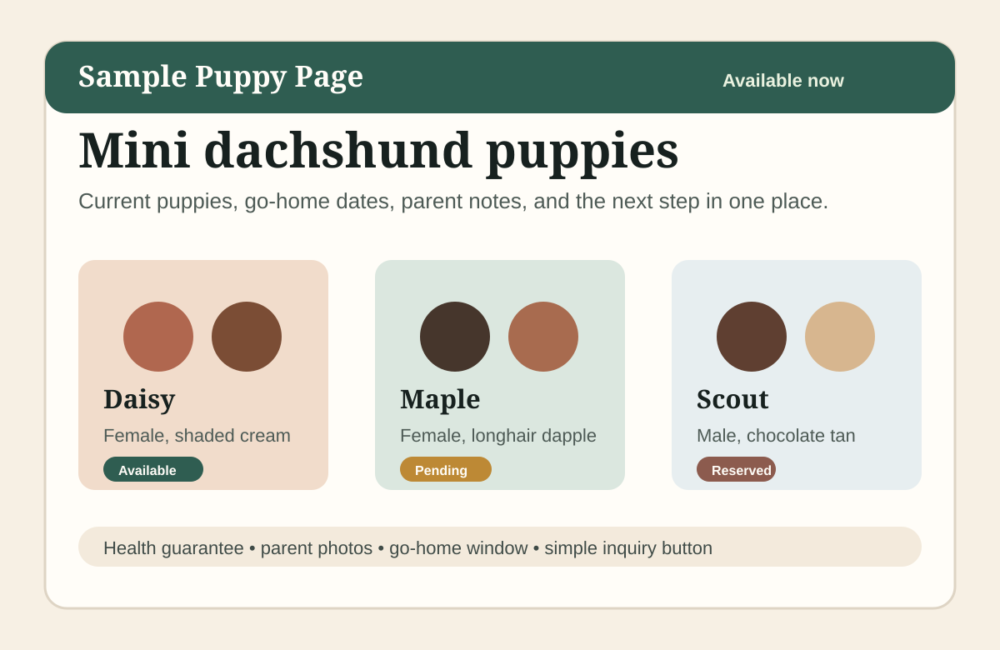
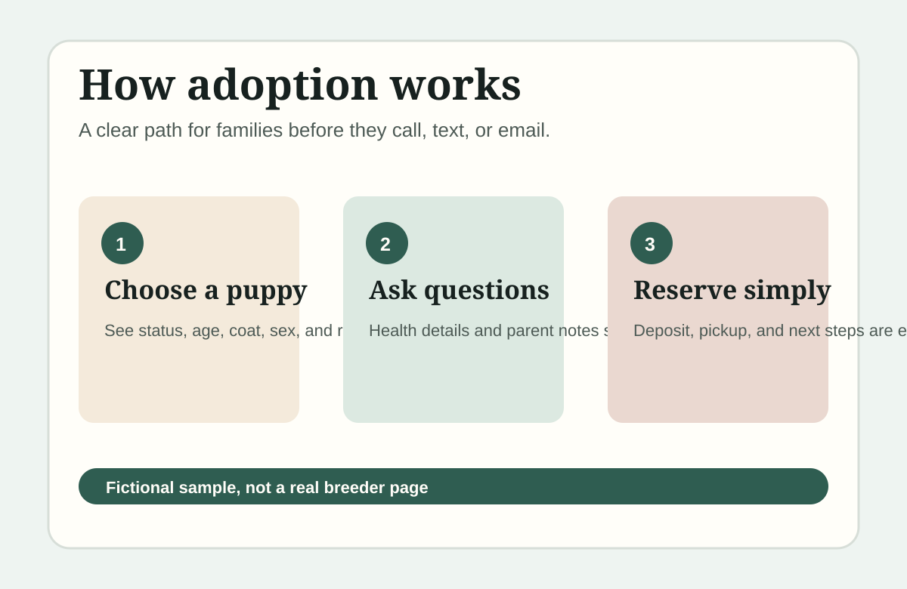
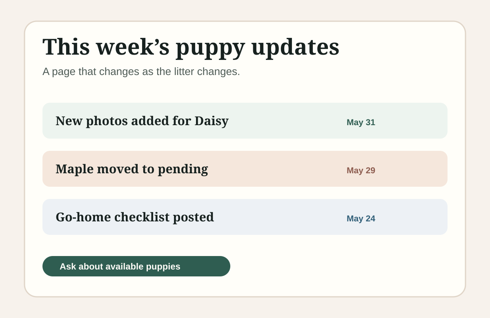

Is this puppy real and current?
Status, go-home date, price/deposit context, parent notes, and process need to be visible before an inquiry.
Puppy Page Studio keeps availability, care notes, photos, and next steps clear for breeders who do not want to live inside a website builder.


A focused page upgrade for breeders who want clearer inquiries and fewer “is this puppy still available?” messages.
The available-puppies page has to do a lot of work: show what is current, explain the next step, and make your standards easy to see without turning your site into a sales page.
Status, go-home date, price/deposit context, parent notes, and process need to be visible before an inquiry.
Reserved, sold, upcoming, and no-current-puppies states should be easy page updates, not a redesign every month.
Light watermarking, dated litter context, and direct puppy links make copied listings easier to spot without making the page feel paranoid.
No kennel CRM. No giant rebuild. Just the page buyers keep checking, designed around current availability, clear standards, and easy upkeep.
Current, reserved, sold, waitlist, and upcoming states stay clear on mobile and desktop.
Parent context, health/process notes, location signals, and buyer expectations are designed to be scanned.
Breeders can send photo/status changes without living inside a website builder.
Direct puppy links and tasteful image cues help legitimate breeders stand apart from copied listings.
These are fictional samples, not client case studies. They show the kind of page a breeder could send to families: current puppy status, visible trust context, and simple updates as a litter changes.

The real value is not one pretty launch. It is keeping the page accurate as litters change, buyers reserve puppies, and new photos come in.
The service is intentionally small: one page that helps families understand what is available, what is real, and what happens next, with updates handled as puppies move from available to reserved to sold.